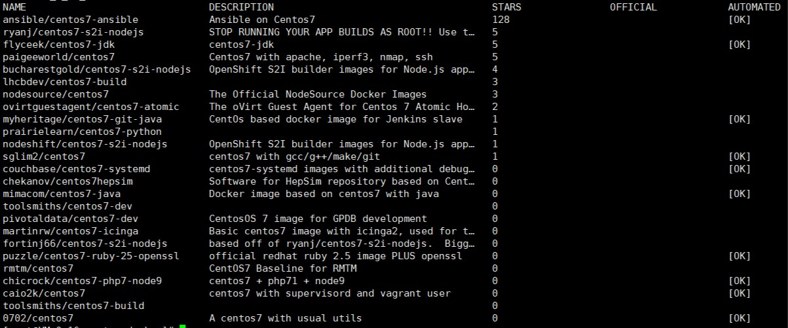
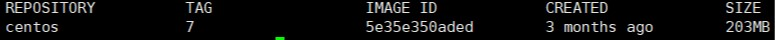
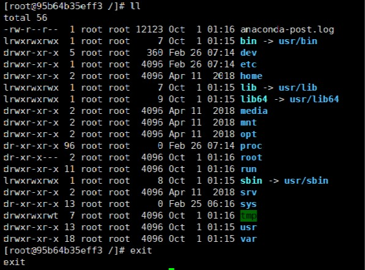
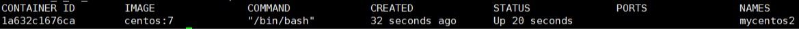
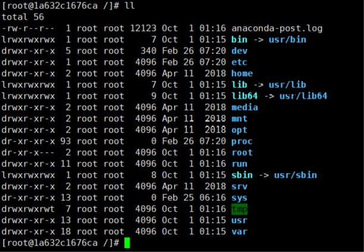
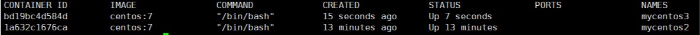
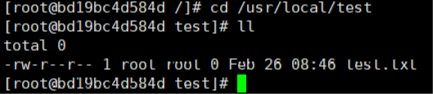

废话不多说，前提条件是你的电脑已安装Docker和完成了基本的配置，还没有的话开车送你去Docker基础知识
Docker镜像
容器的运行是建立在镜像基础之上，当然前提是docker服务已启动。
-
先用
查看镜像的命令查看一下本机有什么镜像，不出意外应该啥也没有：1
docker images
-
镜像没有没关系，从共有仓库
拉取镜像下来就行了，先来搜索你需要拉取的镜像，比如我们想搜索一个centos7的镜像：1
docker search +你要搜索的镜像名称(如：centos7)
搜索出来的结果：

-
搜索到之后就拉取我们需要的镜像，比如我们拉取一个centos7镜像：
1
docker pull centos:7(镜像的名字:版本号)/(若不指定版本号，默认拉取最新版本)
过了一小会之后就会提示
Pull complete，说明拉取成功。这时候我们再回头使用查看镜像的命令就会看到centos7的镜像了：

-
镜像可以拉取当然也可以删除：
1
docker rmi centos(要删除的镜像名或者镜像id)
-
或者哪天不开心想把全部镜像删了：
1
docker rmi `docker images -q`
Docker容器
首先我们要知道docker容器分为两种，一种是 交互式容器，一种是 守护式容器，实际开发中一般采用守护式容器。
两者本质区别
- 交互式容器随容器的创建、启动而启动，随容器的退出而关闭。
- 守护式容器随容器的创建、启动而启动，但退出容器后，容器依然在后台运行。
上面我们已经拉取了centos7镜像，下面我们先了解一下创建容器的相关命令属性：
| 属性 | 说明 |
|---|---|
| -i | 表示运行 |
| -t | 表示容器启动后会进入其命令行，加入这两个参数后，容器创建就能登录进去，即分配一个伪终端 |
| –name | 为创建容器的名字 |
| -v | 表示目录挂载、映射关系 |
| -d | 在run后面加上-d参数，则会创建一个守护式容器在后台运行 |
| -p | 表示端口映射 |
| -e | 表示添加环境变量 |
-
查看容器命令（只能查出正在运行的容器）：
1
docker ps
-
查看全部容器命令：
1
docker ps -a
-
查看容器的IP地址：
1
docker inspect 容器名字或id
创建一个交互式容器：
1 | docker run -it --name=mycentos7 centos:7 /bin/bash |
执行后会自动进入我们所创建好的容器—mycentos7，使用 ll 命令，然后退出就会回到本机：

创建一个守护式容器：
1 | docker run -di --name=mycentos2 centos:7 |
创建成功后查看一下容器列表，发现已经在后台运行了：

下面进入该容器看看（exec表示进入的意思）：
1 | docker exec -it mycentos2 /bin/bash |

可以看出来和交互式容器没什么区别，当我们执行 exit 命令退出该容器后，再查看一下容器列表，发现该容器依旧在后台运行，刚才创建的交互式容器可以通过 docker ps -a命令查看。
-
停止守护式容器运行：
1
docker stop 容器名称或者id
-
启动容器：
1
docker start 容器名称或者id
目录挂载
将宿主机的目录与容器内的目录进行映射，这样我们就可以通过修改宿主机某个目录的文件从而去影响容器
-
创建映射目录
1
mkdir /usr/local/test
-
创建并启动一个守护式容器并挂载test目录：
1
docker run -di -v /usr/local/test:/usr/local/test --name=mycentos3 centos:7
查看容器列表：

我们在宿主机的test目录下新建一个文件：
1 | touch test.txt |
然后进入 mycentos3容器：
1 | docker exec -it mycentos3 /bin/bash |
进入test目录下查看文件信息：
1 | cd /usr/local/test |

发现在宿主机创建的test.txt文件也同样被创建在容器中挂载的目录下。
-
删除容器
1
docker rm 容器名称 (注意，正在运行中的容器是无法删除的)